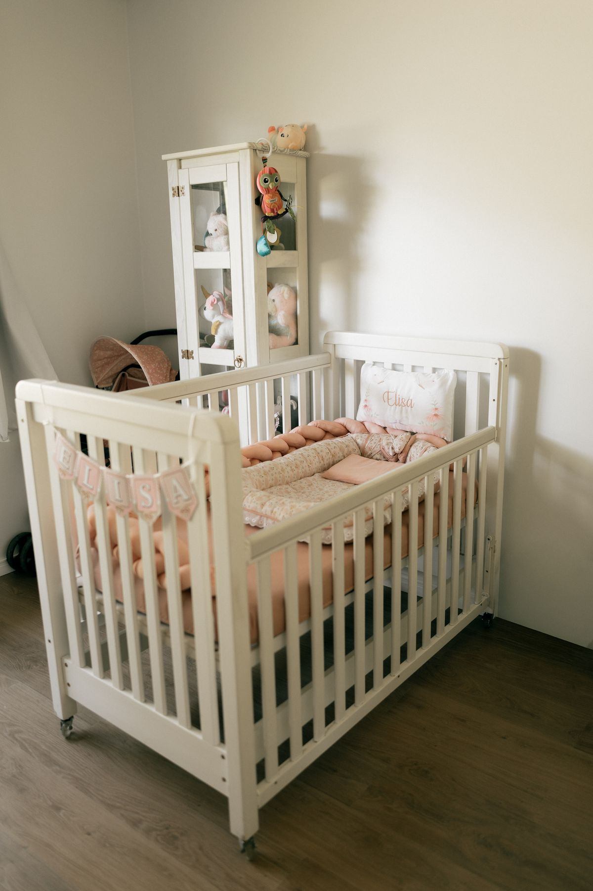

Como Organizar a Cômoda do Bebê de um Jeito Prático

Parte do Guia de Organização da Casa para o Bebê
Uma cômoda organizada economiza tempo justamente nos momentos em que uma mão está ocupada com o bebê. O segredo não é ter muitas divisórias, mas deixar o que é usado todos os dias ao alcance e criar um sistema fácil de manter.
Antes de começar
- Retire tudo das gavetas e limpe o interior.
- Separe as peças por tamanho: RN, P, M e G.
- Deixe de lado roupas fora da estação ou que só servirão mais tarde.
- Confira se todas as peças estão limpas, secas e sem etiquetas soltas.
O que colocar em cada gaveta
Primeira gaveta: fraldas, paninhos, meias, babadores e itens usados nas trocas. São os objetos que precisam ficar mais acessíveis.
Segunda gaveta: bodies e macacões do tamanho atual. Organize na vertical para enxergar todas as peças sem desmontar a pilha.
Terceira gaveta: pijamas, casaquinhos e roupas de passeio. Peças usadas com menor frequência podem ficar mais abaixo.
Última gaveta: próximo tamanho e itens de reposição. Coloque uma etiqueta com o tamanho para lembrar de revisar essa gaveta todo mês.
Como evitar que a bagunça volte
- Mantenha uma pequena caixa para roupas que deixaram de servir.
- Guarde somente uma categoria em cada divisória.
- Evite encher completamente as gavetas: sobra de espaço facilita a rotina.
- Faça uma revisão rápida sempre que começar a usar um novo tamanho.
Checklist rápido
- Itens de troca na gaveta mais alta
- Roupas do tamanho atual visíveis
- Próximo tamanho separado e identificado
- Caixa para peças pequenas ou que não servem mais
- Produtos e objetos perigosos fora do alcance da criança
Perguntas frequentes
Preciso comprar organizadores?
Não. Caixas pequenas e divisórias que você já tem podem funcionar. Compre um
organizador apenas se ele resolver uma categoria que continua misturada.
É melhor dobrar ou enrolar as roupas?
Os dois métodos funcionam. A dobra vertical costuma facilitar a visualização;
o melhor sistema é aquele que você consegue repetir depois de cada lavagem.
Baixe também o checklist gratuito do enxoval essencial para conferir o que já está pronto.